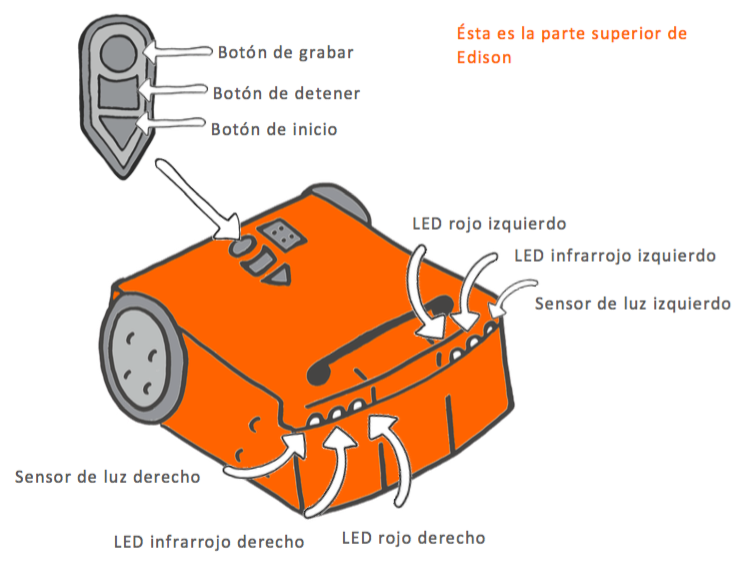
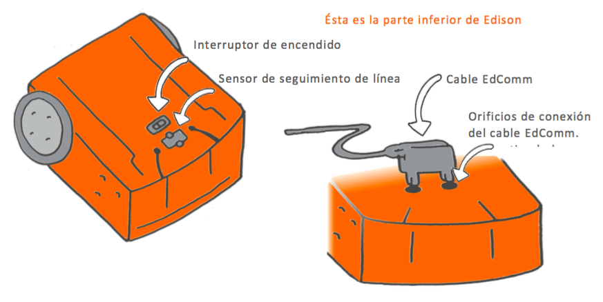

Esta actividad inicial está diseñada para permitir que los estudiantes se familiaricen con el robot Edison, incluidos los diversos sensores y botones de Edison.
El robot Edison es programable, compatible con ladrillos LEGO y tiene sensores, luces y sonidos integrados.
Edison es capaz de varios comportamientos autónomos, que los estudiantes explorarán en lecciones futuras.
Desarrollar una comprensión de las partes de Edison ayudará a los estudiantes a usar Edison en lecciones
futuras más desafiantes.


• Puede ser útil que los estudiantes guarden esta hoja de actividades para revisar los componentes de Edison en lecciones futuras.
• Todas las actividades de las lecciones de EdBlocks contienen información que los estudiantes necesitarán
para la actividad.
Desarrollar un buen hábito de leer la hoja de actividades y seguir sus instrucciones ayudará a los
estudiantes a trabajar en lecciones futuras de forma independiente.
Leer esta lección y encontrar las partes de Edison juntos puede ser útil para comenzar a crear este
hábito.
1. Explore los muchos tipos de robots que existen en el mundo, como los brazos robóticos en la fabricación o
las aspiradoras robóticas estilo Roomba.
Hable sobre lo que hacen los robots para ayudar a las personas.
2. Hable sobre robots en la cultura pop, como WALL-E de Disney y Star Wars.
Explore las diferencias y similitudes entre los robots del mundo real y los robots ficticios.